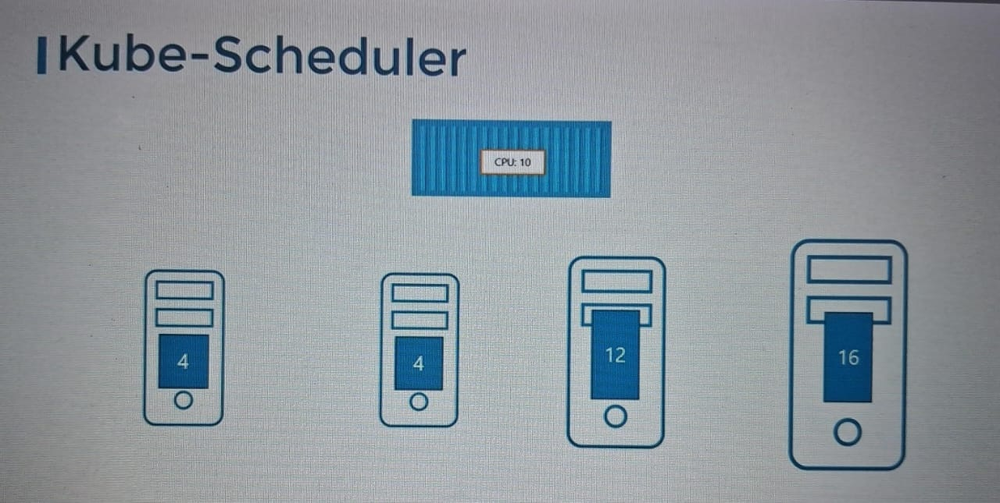
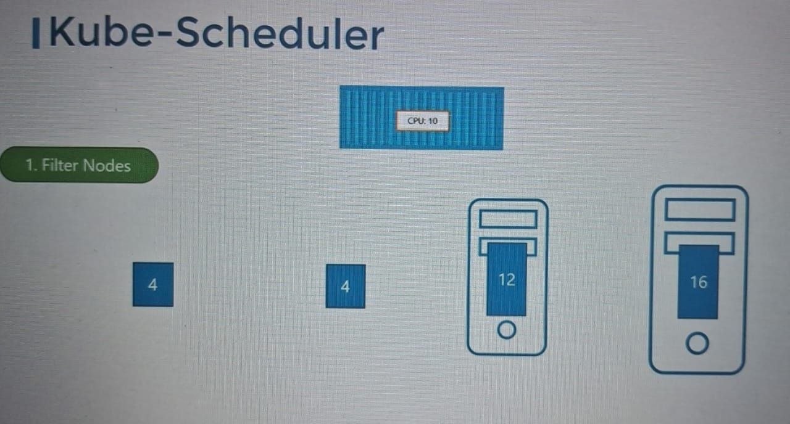
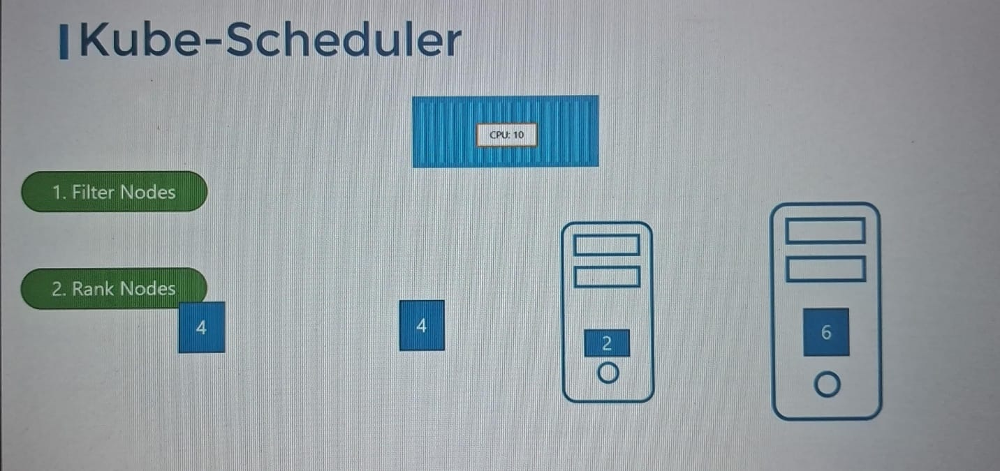

Schedular only decides which pod goes to which nodes.
Scheduler actually does not place POD to nodes , its the responsible of KUBELET(as kubelet is captain of ship/ nodes, who creates the pod in nodes).
Scheduler only decided which pod goes where means which node.
Pods are of different size and configuration and schedular checks each nodes and assign the nodes as per requirements.
How scheduler assign a node:
Request reached to Scheduler to assign node to newly created Pod.
It filters the nodes have free resource free as per resource requiremnets.
Then it rank nodes as per nodes free resource and which have more resource will be put in high rank
And is highest ranked is select to put the pod
Note:Scheduler can works that way that we can also customize the scheduler we want it to be work to schedule a pod on nodes.
more to learn:
Resource Requirements and Limits:
Taints and tolerations:
Node Selectors/Affinity:
Advance in scheduling-----------------------
Need to create page